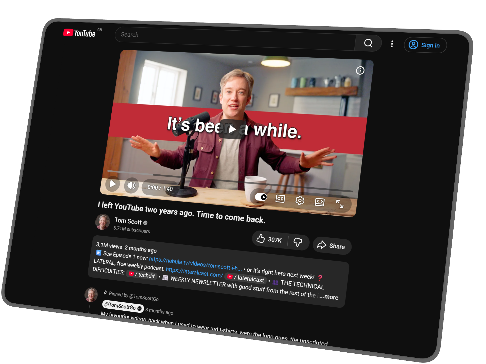

01 / Desktop App
Mono for Desktop
A distraction-free video library
A desktop app for watching the videos already on your computer. Point it at your folders and it gathers them into one library you can search, preview, and play. Nothing is moved or uploaded; everything stays on your machine.
- Gathers your videos into one searchable library.
- Plays almost any format and picks up where you left off.
- The files on your machine remain untouched.

02 / Browser Extension
Mono for YouTube
A distraction-free YouTube extension
A lightweight browser extension that removes recommendations, visual clutter, and dark patterns from YouTube using CSS. It keeps the player, search, description, read-only comments, and account controls.
- Removes recommendations and other attention traps.
- Keeps the player, search, description, and comments.
- Runs quietly without tracking you or adding clutter.
